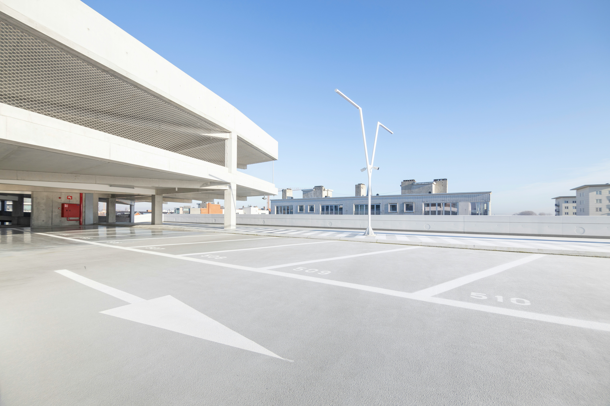

アクセス
〒123-4567
福岡県福岡市博多区博多駅123-123
電話番号：123-XXX-XXX
お車でお越しの方
-
北九州方面
九州自動車道「福岡インター」より福岡都市高速に乗り換え
「博多駅東ランプ」より博多駅方面へ約5分 -
熊本・鳥栖方面
九州自動車道大宰府インターより福岡都市高速に乗り換え
「半道橋ランプ」より 博多駅方面へ約15分 -
唐津方面
西九州自動車道福岡西料金所から福岡都市高速に乗り換え
「博多駅東ランプ」より 博多駅方面へ約5分
駐車場には限りがございます。
満車の場合はお近くのコインパーキングをご利用ください。
バスでお越しの方
-
路線バス
博多駅前バス停下車徒歩3分 -
高速バス
博多駅前バス停および博多バスターミナル下車徒歩3分
電車でお越しの方
-
小倉駅から
在来線特急ご利用で約40分、新幹線ご利用で約20分 -
熊本駅から
新幹線ご利用で約30分～約50分 -
鹿児島中央駅から
新幹線ご利用で約1時間20分～約1時間40分 -
地下鉄ご利用
地下鉄博多駅下車徒歩3分